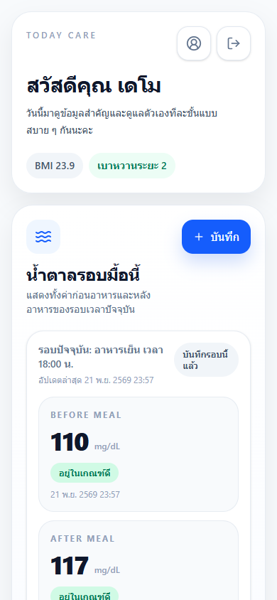

User
Record glucose before or after meals, review recent trends, set meal reminders, and ask the assistant questions.
Today Care / HEALTH SUPPORT · WEB + ANDROID
A Thai health-support app connecting glucose records, meal reminders, an AI assistant, and an administrator workspace.
Portfolio project · Thai interface · Synthetic demo data

01 / THE PROBLEM
The project brings health logs, reminder settings, and educational chat into one mobile-oriented experience. An administrator interface provides a separate place to review usage, knowledge content, and response evaluation.
Record glucose before or after meals, review recent trends, set meal reminders, and ask the assistant questions.
Review aggregated activity, manage knowledge content, inspect records, and evaluate assistant responses.
02 / ENGINEERING DECISIONS
The interface is one part of the project. These decisions explain how the implementation supports its workflow.
React powers the web experience; Capacitor provides the Android shell and native notification integration.
An Express API uses signed HttpOnly session cookies and authenticated routes. Database access stays on the server.
Gemini supports the educational chat workflow. The project is health-support software and does not establish clinical safety or effectiveness.
React · Vite · Tailwind CSS · Recharts
Capacitor · Local notifications
Node.js · Express · Signed sessions
Supabase PostgreSQL · Gemini
03 / DEMO GALLERY
Captured from local production builds with intercepted synthetic API responses. Select a view, then click the image to enlarge it.
04 / VERIFICATION
Builds & database connectionBoth web builds passed. A read-only connection check passed against the configured PostgreSQL database with encryption and certificate verification enabled.
Prior Android verificationAndroid app and notification behavior were previously tested successfully, as confirmed by the project owner. This review did not repeat a device installation.
Repeatable reviewRegression tests and production builds run in GitHub Actions. The source review records fixes, checks, and remaining work.
05 / NEXT ITERATION
Add isolated database/API integration tests, strengthen authentication throttling, and rerun Android notification checks whenever related code changes.